✦ sebelum kita mulai ✦
bukan hadiah yang bisa kamu pegang — hanya sekumpulan hal yang aku syukuri dan belum pernah aku ucapkan dengan lantang
ketuk untuk membukanya
✦ sebuah buku kecil yang aku tulis untukmu ✦
satu halaman, satu alasan aku bersyukur atas kehadiranmu — ketuk untuk membalik
Halaman Pembuka
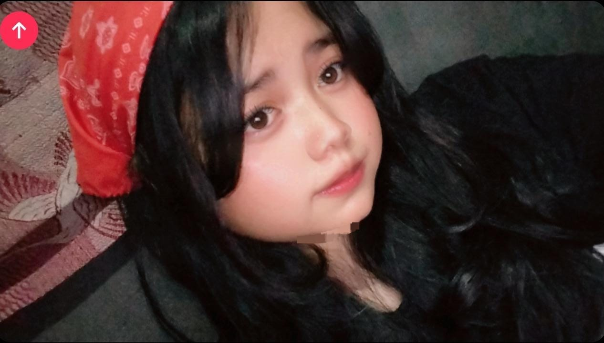
Buku ini penuh dengan hal-hal kecil yang selalu aku rasakan tapi jarang pernah aku ungkapkan. Sebagian terasa sepele, sebagian agak memalukan untuk diakui, tapi semuanya nyata. Jadi nikmati saja setiap halamannya, ya? Tidak perlu buru-buru.
iHalaman Penutup
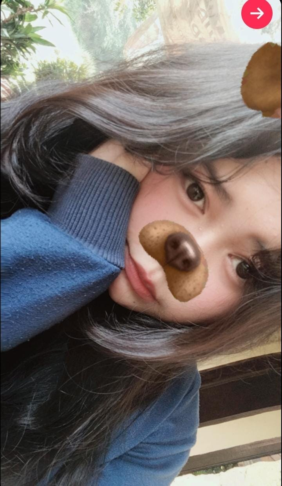
Oke, ini halaman terakhir — tapi sejujurnya, ini belum semuanya. Masih banyak yang belum aku tuliskan, karena daftarnya terus bertambah setiap hari yang aku habiskan bersamamu. Anggap saja ini baru jilid pertama.
xHalaman 9
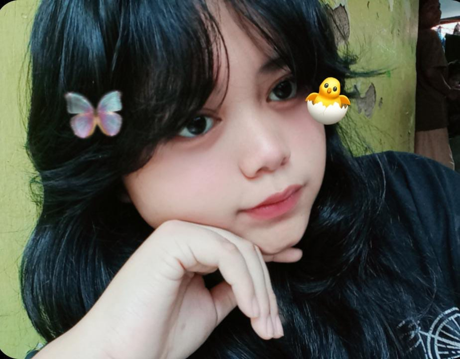
Aku tahu hidupmu juga tidak selalu mudah. Ada hari-hari ketika kamu mungkin ingin menyerah pada banyak hal, tapi kamu terus memilih untuk bertahan, terus memilih untuk tetap mencintai. Itu bukan hal kecil bagiku — itu keberanian yang diam-diam, dan itu sesuatu yang aku kagumi lebih dari yang pernah aku ungkapkan.
9 ketuk untuk balik ⟲Halaman 10
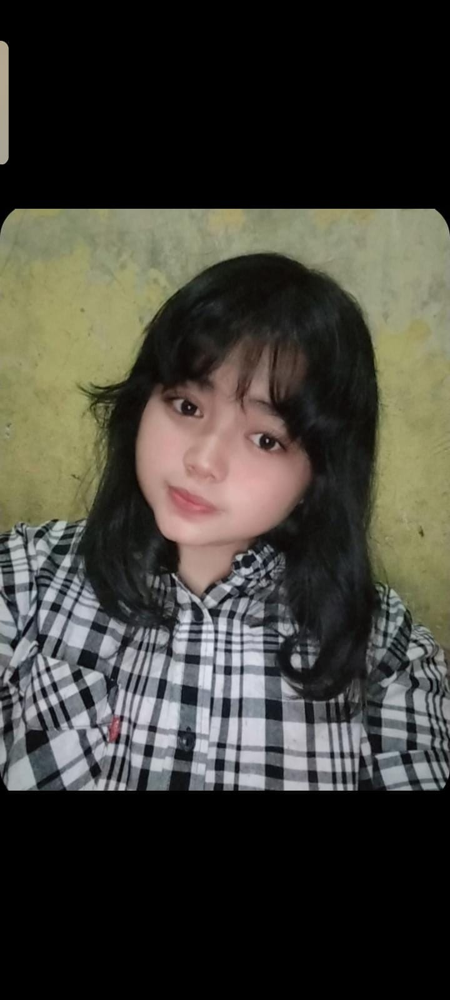
Kamu sudah mempercayaiku dengan harapan dan rencanamu, hal-hal yang benar-benar kamu pedulikan, bukan hanya yang di permukaan. Sebagian dari mimpi-mimpi itu, kini kita bangun bersama. Aku tidak menganggap itu enteng, dan aku tidak akan menyia-nyiakan kepercayaan yang kamu berikan kepadaku.
10 ⟲ ketuk untuk kembaliHalaman 7
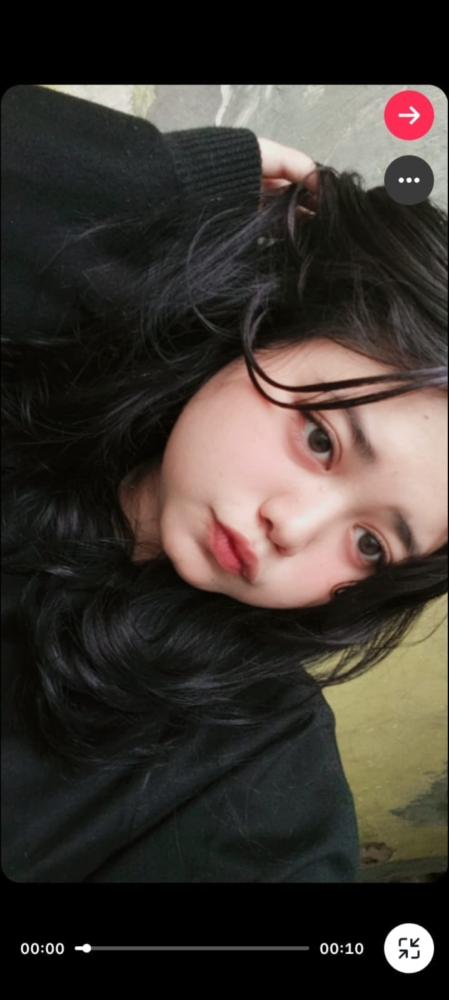
"Udah makan belum", "hati-hati di jalan", "aku di sini kalau kamu butuh" — pesan-pesan kecil itu selalu muncul tepat saat aku membutuhkannya, seolah kamu entah bagaimana tahu. Bukan pesan yang panjang pun, tapi selalu berhasil membuat hariku terasa sedikit lebih ringan, setiap kali.
7 ketuk untuk balik ⟲Halaman 8
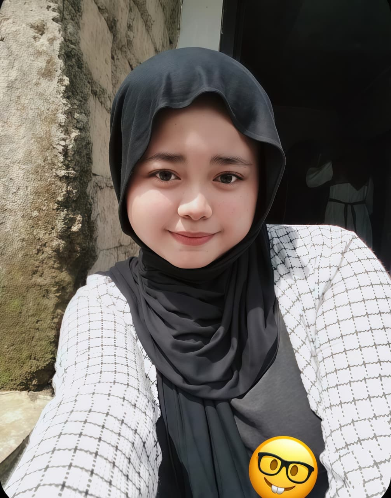
Di dekatmu, aku tidak perlu berpura-pura baik-baik saja ketika tidak. Kamu memberi ruang untukku berantakan kadang-kadang, untuk tidak punya segalanya, tanpa membuatku merasa dihakimi. Rasa aman seperti itu sejujurnya adalah salah satu hal terbaik yang pernah diberikan siapa pun kepadaku.
8 ⟲ ketuk untuk kembaliHalaman 5
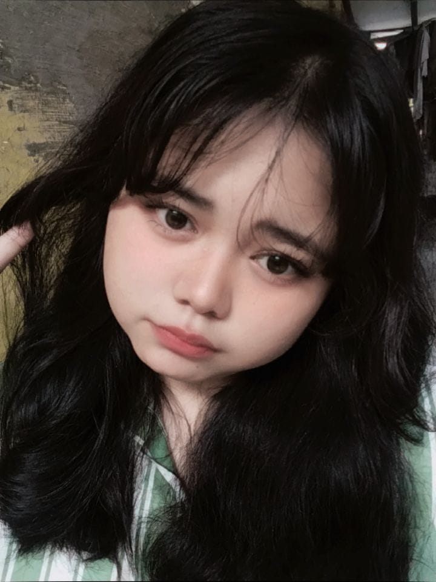
Kamu mendengarkan ceritaku bahkan ketika aku mengulang hal yang sama, bahkan ketika apa yang aku katakan tidak terlalu penting. Kamu tidak menyela atau memotongku, dan tidak pernah membuatku merasa aku terlalu banyak bicara. Jujur, itu sesuatu yang langka, dan aku selalu menyadarinya setiap kali.
5 ketuk untuk balik ⟲Halaman 6
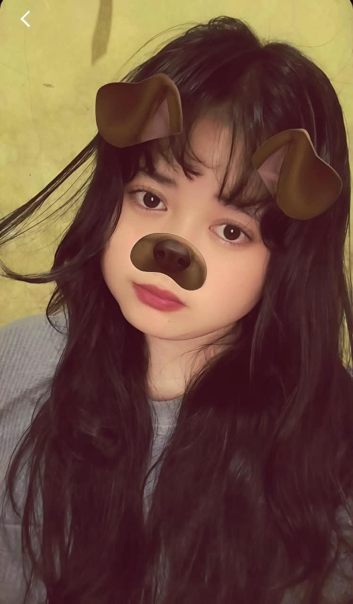
Kamu tidak hanya melihatku di hari-hari baikku. Kamu sudah melihatku lelah, frustrasi, tidak benar-benar baik-baik saja — dan kamu tetap memilih untuk tinggal. Dilihat seperti itu, sepenuhnya, tanpa harus berpura-pura, adalah sesuatu yang sungguh aku syukuri.
6 ⟲ ketuk untuk kembaliHalaman 3
Kamu ingat hal-hal seperti minuman favoritku, atau satu hari yang berat dua minggu lalu yang hampir tidak aku sebut. Detail-detail kecil yang kamu pegang itu yang membuatku merasa kamu benar-benar memperhatikan, bukan sekadar mendengar karena kebiasaan.
3 ketuk untuk balik ⟲Halaman 4
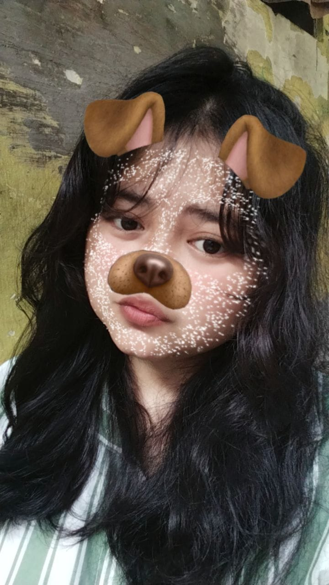
Aku tidak selalu mudah dihadapi, aku tahu itu. Tapi kamu memilih kesabaran daripada menyerah, kamu memilih berbicara daripada pergi. Cinta seperti itu tidak selalu terlihat keras atau jelas, tapi aku merasakannya setiap kali, bahkan ketika aku tidak mengatakannya.
4 ⟲ ketuk untuk kembaliHalaman 1
Waktu adalah satu hal yang tidak bisa dikembalikan, dan kamu terus memilih untuk menghabiskannya bersamaku — bahkan dengan semua yang sedang berjalan, semua hal lain yang menarik perhatianmu. Aku tidak akan pura-pura itu sesuatu yang biasa atau yang aku layak dapatkan begitu saja. Itu berarti banyak, lebih dari yang biasanya aku tunjukkan.
1 ketuk untuk balik ⟲Halaman 2
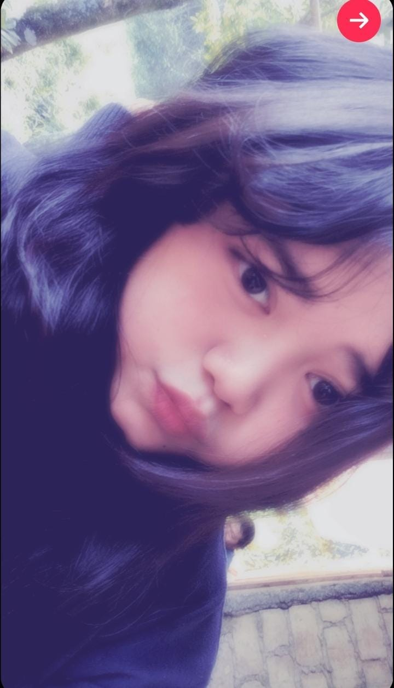
Dari semua pilihan dan kemungkinan yang ada di luar sana, kamu terus memilih untuk ada di sini, bersamaku. Itu terjadi setiap hari, dengan tenang, tanpa membesar-besarkannya — dan itulah tepatnya mengapa aku merasa begitu beruntung, setiap kali aku berhenti dan memikirkannya.
2 ⟲ ketuk untuk kembalihalaman 0 dari 10 dibuka
✦ satu hal lagi sebelum kita lanjut ✦
ada hal-hal yang lebih mudah ditulis daripada diucapkan
Hei, kamu —
Ada setumpuk rasa syukur yang terus menumpuk di kepalaku hampir setiap hari, tapi kebanyakan waktu aku tidak tahu cara mengungkapkannya tanpa terdengar terlalu dramatis. Jadi aku pikir lebih baik aku tuliskan saja.
Aku merasa beruntung. Bukan karena segalanya sempurna atau selalu mudah — memang tidak — tapi karena di tengah semua bagian hidup yang berantakan dan belum selesai ini, aku punya kamu untuk melewatinya bersama. Jujur, itu sudah lebih dari cukup bagiku.
Terima kasih sudah bertahan di hari-hari ketika aku sulit dihadapi, karena percaya kepadaku bahkan ketika aku tidak percaya pada diriku sendiri, dan karena mencintaiku dengan cara yang sederhana tapi entah kenapa selalu terasa sangat berarti.
Semoga surat kecil ini cukup menyampaikan apa yang biasanya aku simpan sendiri: aku bersyukur, hari ini dan setiap hari, hanya karena kamu ada di sini.
milikmu, selalu bersyukur
⋆ tap the envelope to open it ♡
✦ pieced together, one by one ✦
every little piece of this is part of why I'm grateful
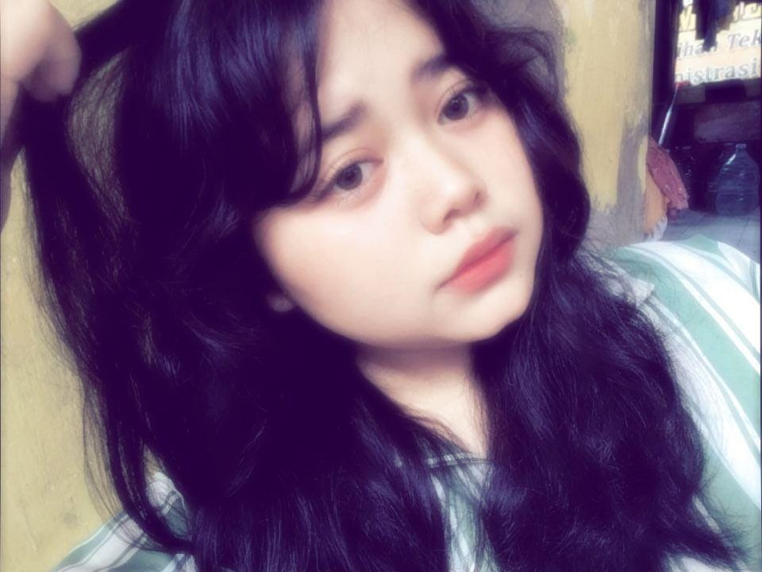
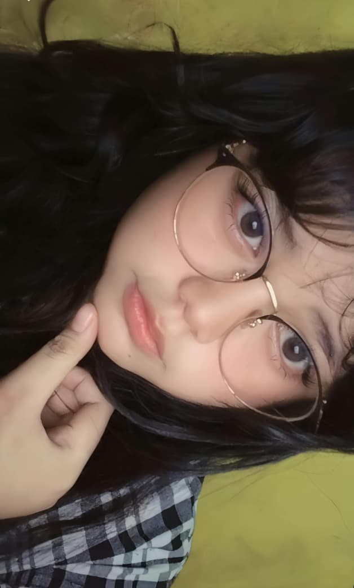
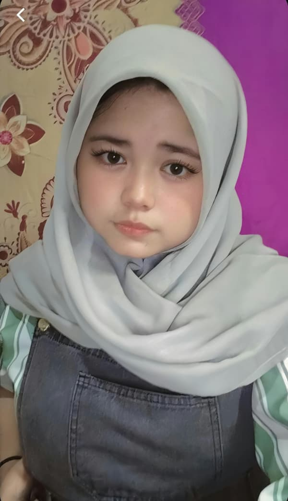
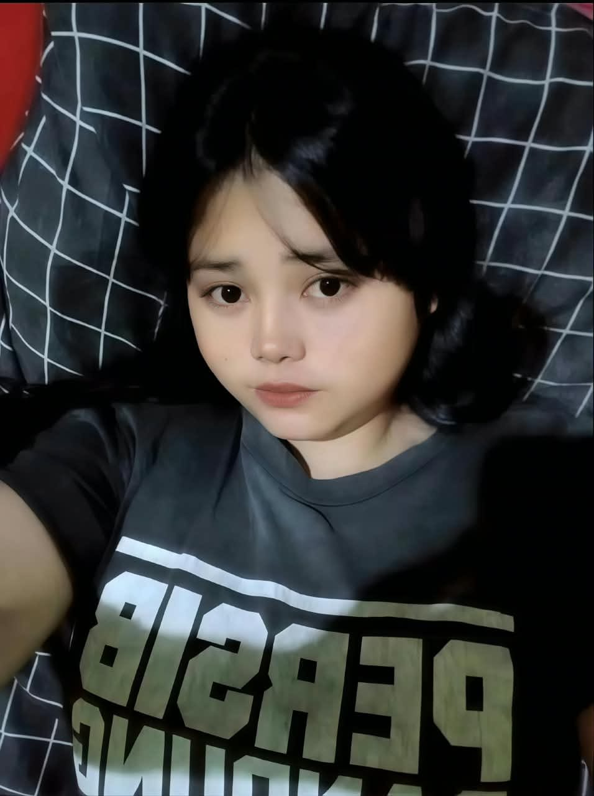
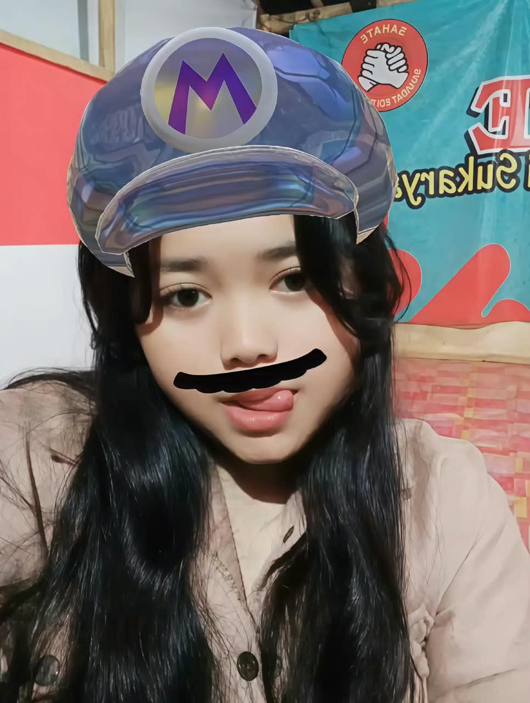
✦ lucky, quietly, in every single one of these ✦
✦ for this last part, let my voice do the talking ✦
✦ a closing, not an ending ✦
The book's been read, the letter's open, and the memories are all laid out now. But honestly, the way I feel about you doesn't stop at the last page — it just keeps adding up, every single day I get to spend with you.
Thank you for being a big part of why I feel this lucky. I'm going to keep trying to be someone who deserves all the good you bring into my life, today and for as long as we've got.
made with a kind of gratitude that doesn't really run out, just for you ♡